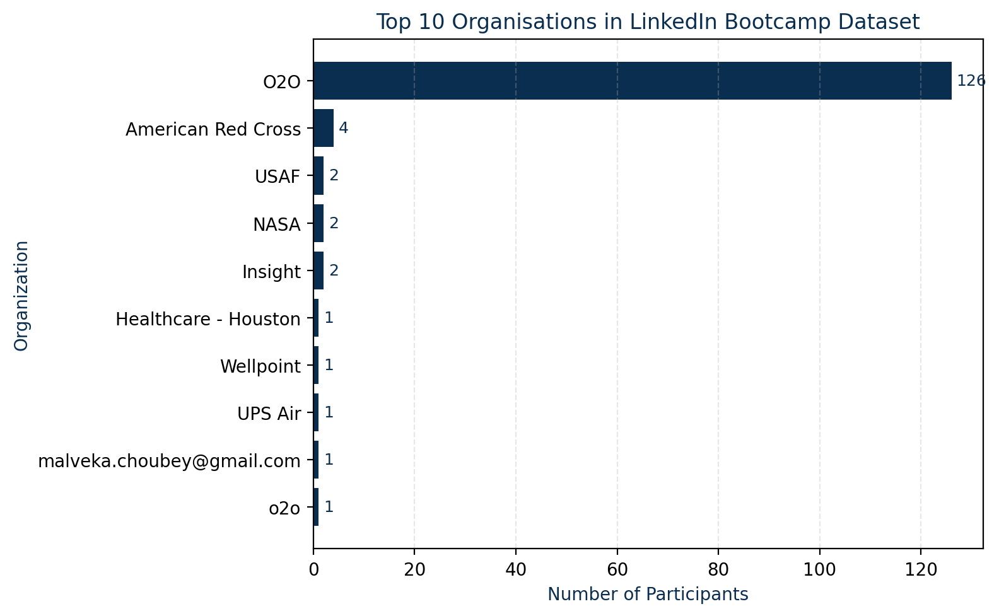

Building a robust, scenario‑driven model to support fundraising and growth.
A fast‑growing SaaS startup needed a transparent, dynamic financial model to support their Series A fundraising. Their existing spreadsheets were brittle and difficult to maintain. Ironclad designed a model that captured revenue drivers, churn assumptions and cost structures in a single framework.
Stakeholders can now toggle scenarios on the fly — from sales growth to pricing changes — and immediately see the impact on cash runway and KPIs. The model formed the backbone of their investor deck and instilled confidence in potential investors.
The chart above visualises how one customer segment contributes a majority of revenue. Our modelling helped the client focus on profitable cohorts and plan targeted expansion strategies.
We craft financial models that are as flexible as your vision.
Talk to Us